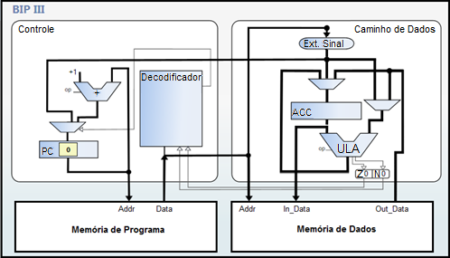
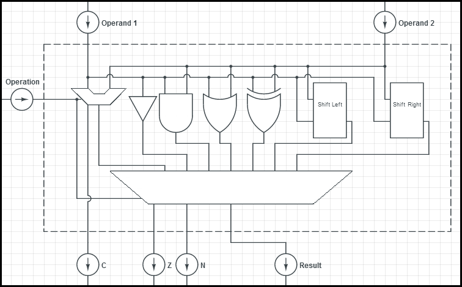

Assim com o BIP II é uma extensão do BIP I, o BIP III é uma extensão do BIP II, vindo por adicionar novas funcionalidades ao processador. As implementações realizadas no modelo do BIP II que vieram a dar origem ao BIP III tiveram como principal objetivo oferecer o suporte a operações de lógica bit a bit. Para que isso fosse possível, foi necessária a expansão da Classe de instruções existente até então. Na expansão realizada foram adicionadas a Classe de instruções referente à lógica booleana e deslocamento lógico de acordo com a tabela abaixo. (RECH, 2011).
| Código da operação | Instrução | Operação | Classe |
|---|---|---|---|
| 00000 - 00111 | Conjunto de instruções referentes ao BIP I. | ||
| 01000 - 01110 | Conjunto de instruções referentes ao BIP II. | ||
| 01111 | NOT | ACC ← NOT (ACC) | Lógica booleana |
| 10000 | AND | ACC ← ACC AND (endereço) | Lógica booleana |
| 10001 | ANDI | ACC ← ACC ANDI constante | Lógica booleana |
| 10010 | OR | ACC ← ACC OR (endereço) | Lógica booleana |
| 10011 | ORI | ACC ← ACC ORI constante | Lógica booleana |
| 10100 | XOR | ACC ← ACC XOR (endereço) | Lógica booleana |
| 10101 | XORI | ACC ← ACC XORI constante | Lógica booleana |
| 10110 | SLL | ACC ← ACC SLL constante | Deslocamento lógico |
| 10111 | SLR | ACC ← ACC SLR constante | Deslocamento lógico |
| 01111 - 11111 | Reservado |
Fonte: Adaptado de Pereira (2008).
Conforme pode ser observado na figura abaixo, a estrutura da organização do BIP III é muito similar à estrutura da organização do BIP II, diferenciando-se uma da outra apenas na ULA (Unidade Lógica Aritmética).
Fonte: Vieira (2012).
No BIP II a ULA realizava apenas operações aritméticas de soma e subtração, com a adição de novas funções de controle lógico a ULA precisou ser alterada para que o suporte a tais operações fosse possível. Com a união da unidade aritmética presente no BIP II e a adição das funcionalidades de lógica booleana e deslocamento lógico propostas pelo BIP III a ULA passa a ter uma identidade de Unidade Funcional apresentada na figura abaixo. (PEREIRA, 2008).
Fonte: Adaptado de Pereira (2008).